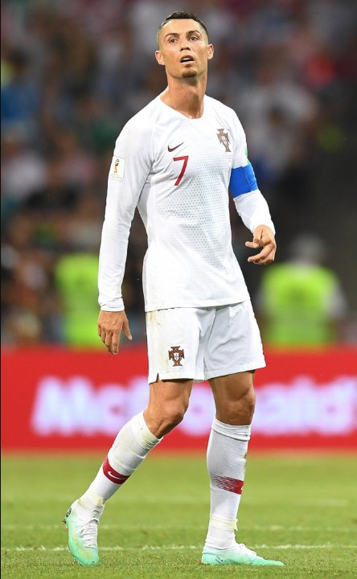

'Rich, Handsome and a Great Player' — The Jealousy Defence
Background: On 14 September 2011, Real Madrid travelled to Dinamo Zagreb in the Champions League group stage. The Maksimir crowd jeered Ronaldo and waved insulting banners all night; Madrid left with a 0-1 win, but the real headline was his answer to 'why does the whole world boo you?'
The jealousy defence is born: 'I think it's because I'm rich, handsome and a great player — people are envious of me. I don't have any other explanation.' One sentence, all three boxes ticked — wealth, looks, greatness — and every critic's motive filed neatly under 'envy'.
The world reacts: The quote circled the globe within hours. Bleacher Report placed it among the quotes of the year; the English press christened it 'the jealousy defence'. It became Exhibit A of football narcissism, dusted off every time Ronaldo produced a new headline-grabbing line.
The 2014 'reflection': Years later, in an interview with France Football, Ronaldo conceded the remark had been a 'mistake' and that he had matured. The trouble: by then the defence was already his signature, and subsequent specials — 'first, second and third in history', 'you investigate me because I'm CR7' — kept the promised maturity under audit.
The core of the script: The genius of the jealousy defence is that it cancels the legitimacy of all criticism: whoever criticises me wishes to be me; whoever questions me covets what I have. The loop recurs throughout his career — Factos, Bernabéu whistles, the tax trial — he is always the envied one, never the one who might reflect.
The control group: Faced with the same whistles and comparisons, Messi's usual route was answering on the pitch and silence off it. 'Jealousy' never became Messi's framework for explaining the world; it became Ronaldo's foundation — a man who wears 'being envied' as a medal ends up a prisoner of his own vocabulary.